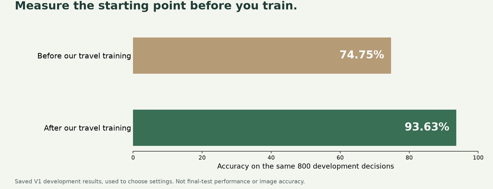

Atlantic hideaway
€1,290 · Full cash refund
Jev-like decisions · Local models · Words + pictures
€1,290 · Full cash refund
Money back. No entrance stairs.
Run the local models.
Live local inference · fictional listing · photos cannot prove a step-free route
By Moritz Laurer · built on ModernBERT
This is the pretrained classifier used for V1. It is different from the raw ModernBERT encoder and our later DeBERTa challenger.

Same 800 development decisions.
Used to choose settings, not final test results.
Development scores helped choose the model. Historical final-test accuracy was 66.5% on a separate test. These are not image or Jev scores.
Our demonstration machine
Text demo
Python 3.12 · uv · Node 22+
Photo reader
Apple silicon · separate ~16 GB download
Other machines
Windows/Linux photo setup is not supplied or tested.
This is the tested host, not a minimum requirement. Download size is not RAM usage. Smaller-memory support is unverified.
uv run --project apps/agency python tools/tutorial.py download
You should get a model ID, version and local folder.
Install tools and follow this step ↗Next: our actual travel contract, then the complete reusable prompt. The prompt is a prepared specification, not a one-shot build receipt.
“Check the written terms for each requirement. Return meets, violates or insufficient evidence.”
Missing terms → review. Budget → ordinary code.
My input is [a holiday offer's complete written booking terms]. My questions are [full cash refund before the deadline; check-in after midnight without arranging it; included pool access; included guided hike]. For each question choose exactly one of [meets, violates, insufficient_evidence].
Inspect available memory, accelerator, disk space, Python and installed tools. Explain what can run locally and what is untested. Do not rent a GPU, buy a service, add paid calls, or download unrelated models.
Preserve `apps/agency/models`, the frozen experiments, and the working persona app. Create a new workshop folder with `tools/tutorial.py prepare`. Keep every new output there. Never overwrite the supplied demo checkpoint or an earlier run.
Run the unmodified classifier on the development set and save predictions or a metrics receipt with the model and data hashes. Report accuracy and macro-F1 in plain language and show actual mistakes. Compare simple rules where they could solve this job. Do not assume fine-tuning is required or promise it will improve performance.
Use `tools/tutorial.py` as the working travel recipe. Run an eight-decision smoke check in a separate folder before the full run. Say clearly that this checks the pipeline, not model quality. Then create a new folder for the full dataset.
Freeze the selected checkpoint before the final test. Compare the original and trained models on identical held-out cases, using the same serialization and candidate descriptions. Include all errors, accuracy, macro-F1 and the individual predictions. Distinguish development progress from final-test performance. If the specialist does worse, say so and keep the report. Do not tune on final-test mistakes and call the same data a fresh exam afterward.
Show me how to load my saved checkpoint and classify a new JSON input. Map outputs to an inspectable result with an explicit review branch for missing or uncertain evidence. Start with a separate demo using the tutorial output. The existing travel API has fixed questions and calibration settings; do not point it at a new checkpoint without a compatible adapter and fresh validation.
Give me one README with prerequisites, exact commands, expected files, troubleshooting and a first-result check. Include the base model pin, data provenance, code, checkpoint manifest, measurements, failures and upstream credits. Keep local inference, model downloads and Codex's build-time costs separate. List what still needs my judgment.
Highlighted excerpt from the selected section. The download contains all eight sections. Change the bracketed job fields; keep the testing requirements.
“Refunds are hotel credit only.”
Which label fits?
A classifier picks a label.
For “full cash refund?”: cash → meets · credit only → violates · missing policy → insufficient_evidence. Fixed labels do not guarantee correct or deterministic answers.
“Contact the booking office to learn which cancellation rules apply.”
Can I get a full cash refund?
Can’t tell insufficient_evidence
Start with an existing reader. Teach it your task.
Actual synthetic training record, cancellation clause excerpt. The full input and other questions are in the download. Active text base: ModernBERT.
Learn from these examples.
Choose settings with these.
Open these after you freeze.
Keep related documents in the same set.
Schema and exact-overlap checks are automated. Near-duplicate and label review still need judgment.
python3 tools/tutorial.py prepare --run workshops/my-travel-model
Keep the working demo while you experiment.
Training changes the model’s saved settings.
uv run --project apps/agency python tools/tutorial.py baseline --run workshops/my-travel-model uv run --project apps/agency python tools/tutorial.py train --run workshops/my-travel-model --epochs 2
Real commands. The verified eight-decision smoke run checks execution only. Full runs produce their own measurements; do not reuse old scores.
Freeze the model before opening the exam.
Synthetic cases, agent-reviewed references, no human validation. Related examples stay together. Final errors remain in the report.
Inspect a held-out V1 example ↗uv run --project apps/agency python tools/tutorial.py test --run workshops/my-travel-model
Open test.json and inspect every wrong answer.
The report includes both predictions, reference labels and model/data hashes. It refuses to overwrite a completed final report.
“arrival and registration at 01:30 are available automatically without any earlier contact or request”
Can you check in after midnight without arranging it?
It missed a clear answer and asked for review.
Saved case …0036, arrival. Excerpt shown; both engines received the same full document. Synthetic reference, agent-reviewed, no human validation.
Inspect full input and saved outputs ↗Jev scored higher. We kept the result.
Text-only comparison: 360 synthetic scenarios · 1,440 decisions per model.
Later V2 experiment: not promoted because its predeclared superiority gate failed.
The demo serves V1. Its historical 66.5% came from a different test; this chart does not measure vision accuracy.
“Cancel seven days before arrival for a full refund to your payment card.”
Question: Can I get a cash refund?
uv run --project apps/agency python tools/tutorial.py predict --run workshops/my-travel-model --input my-policy.json
Inspect the returned candidate sentence. Probabilities are uncalibrated. This uses your tutorial checkpoint and leaves the supplied app untouched.
Our trained text model

Pretrained OpenJev vision
The app combines the answers
Use code to combine the text and photo answers.
The image model reads the picture.
Pretrained OpenJev / DiffusionGemma, connected here. We trained the text reader. Our local integration does not establish hosted Jev’s image support.
Try your own photo locally ↗
Is it a swimming pool?
Can guests use it?
Is it included?
Missing evidence goes to review.
python3 tools/first_run.py --startcd apps/agency
uv run python scripts/start_vision.py --setup --backgroundReads local service status. Does not install anything.
Open the step-by-step guide ↗Use the supplied weights. No retraining needed.
Commands run from the source-kit folder. The first-run tool checks prerequisites and serves the built agency; setup commands are in the guide.
Computer · coding tools · training
Download · installation · maintenance
Total build cost not measuredNo model-provider API fee
Your hardware and electricity
Measure your own workloadHistorical measurements on this host, different workloads. Not a cold-to-warm savings ratio or a universal speed/cost claim. Setup requires downloads; sleep interrupts local service availability.
No examples added yet.
You supply the answer. This editor does not train or predict.
Choose your labels, check your examples, and keep a separate test set.
Start with 20 personally checked cases as a smoke test, not a proven training minimum. Preserve related cases in the same split. See the adaptation recipe.
Confirm your first result.
Label examples you understand.
Keep a human review path.
Built and assembled by Mark Kashef / Prompt Advisers
One repository. Private now; public when the video goes live. Upstream credits and component licenses stay with the project.